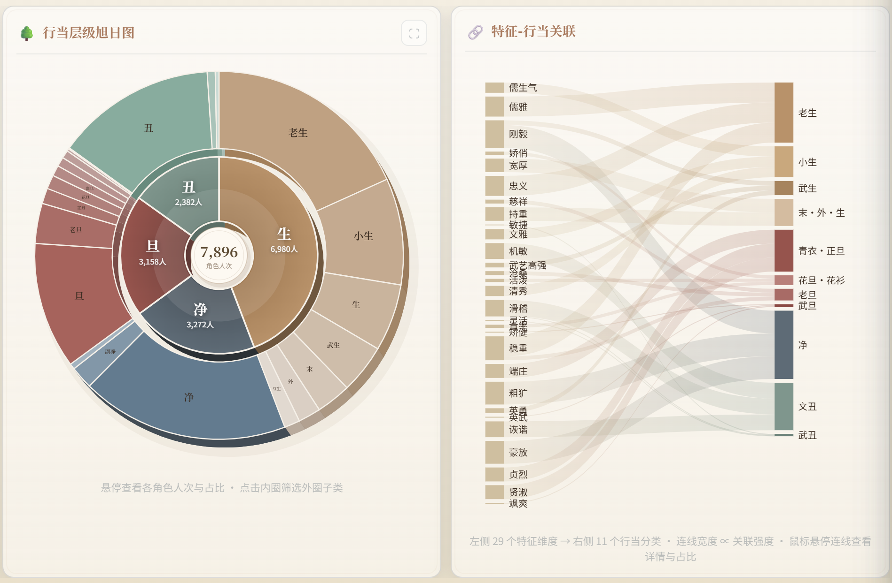
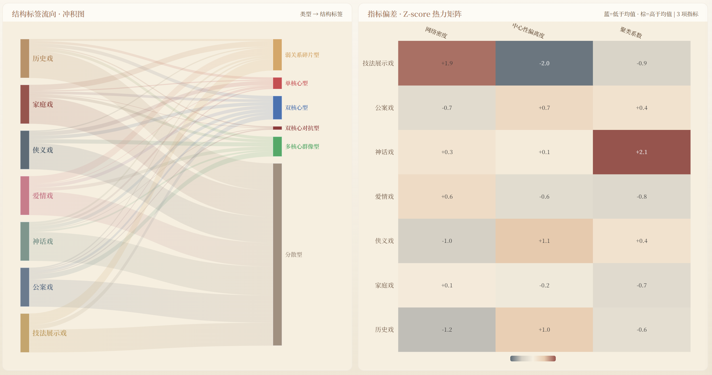
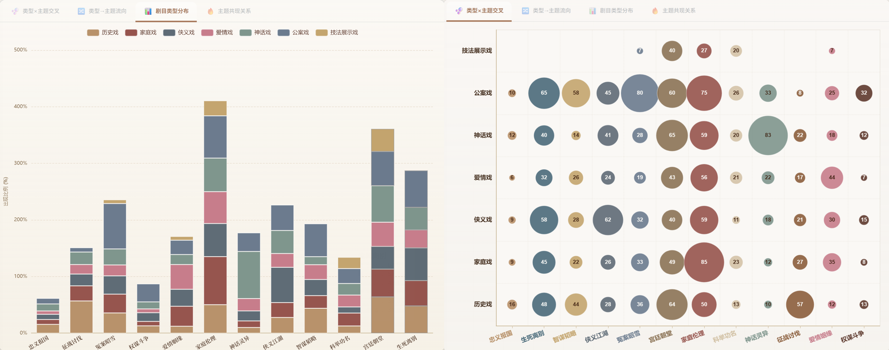
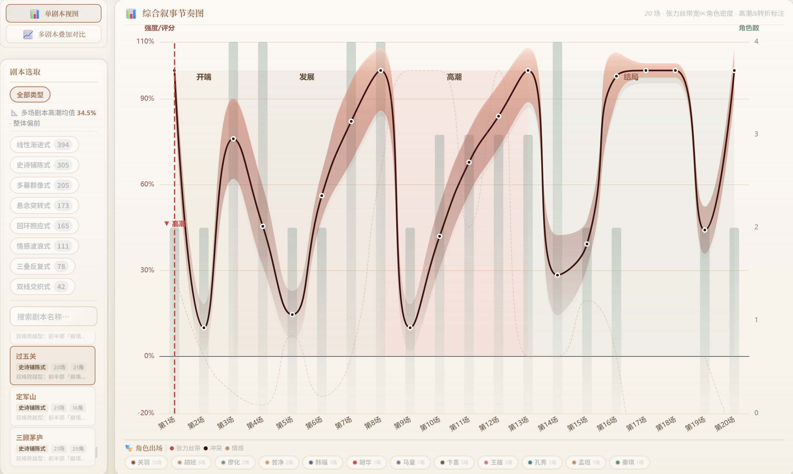
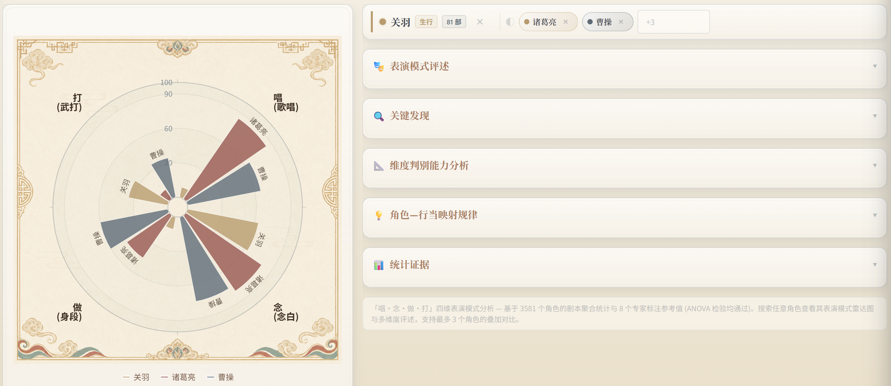
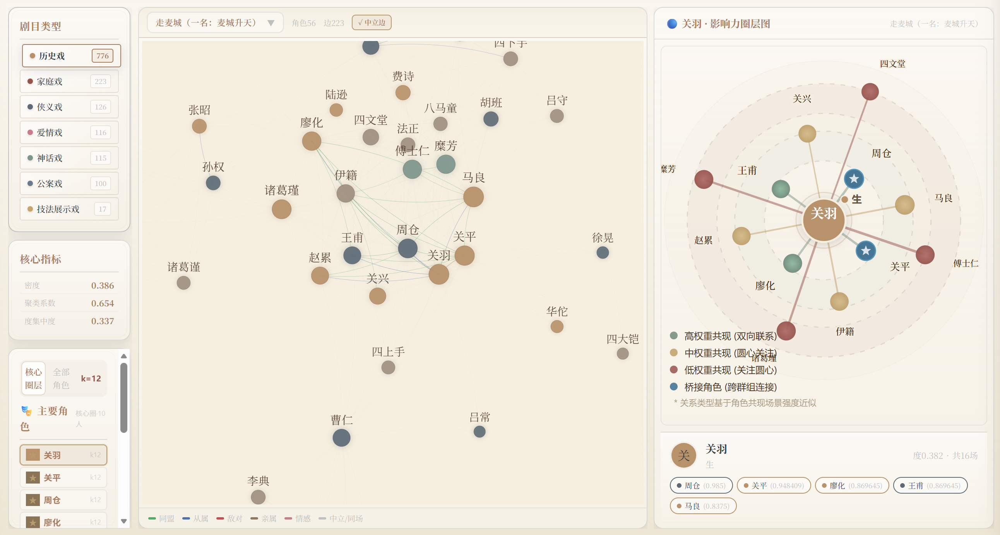
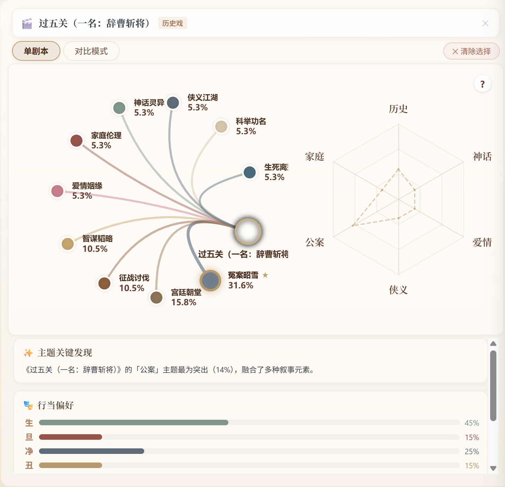
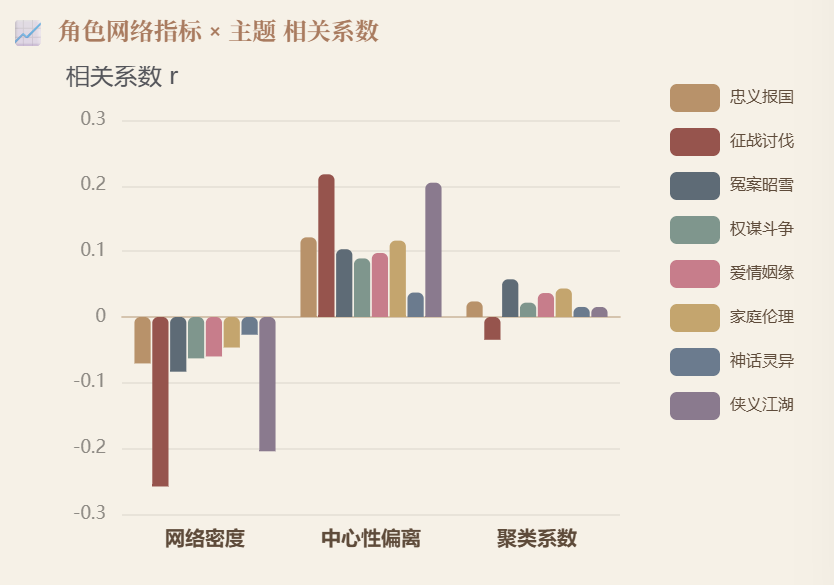
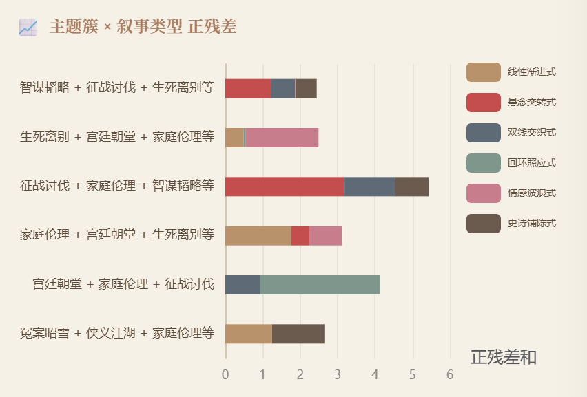
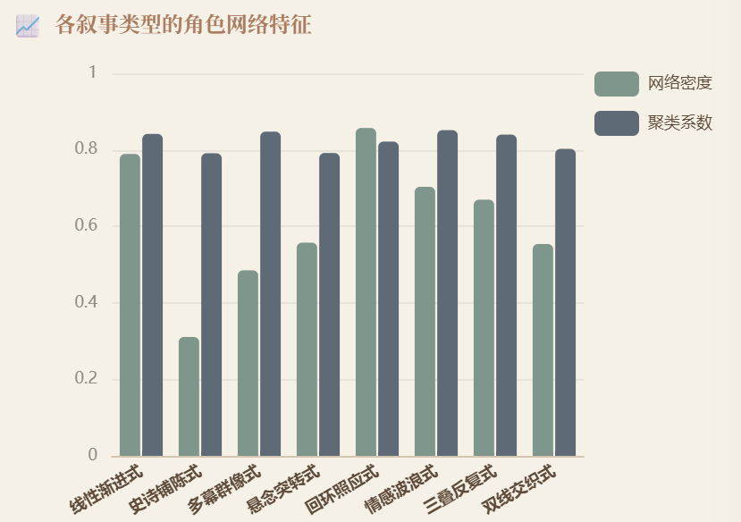

梨园万象——京剧剧本多维可视分析系统

梨园万象 ∞字形粒子长河，1,473 部剧本按六类来源铺展行当格局

梨园星图 1,473 部剧本按多维特征分布于星空，支持原型筛选与单剧详情
原始数据 38源·1473剧
→
结构提取 角色·关系·主题·叙事·指纹
→
统计建模 scipy·sklearn
→
可视化 React+D3+ECharts+Three.js
五维测度
宏观观测 · 1,473 剧本整体规律

角色行当 行当旭日图呈现生旦净丑层级占比，桑基图展示性别、身份、性格到行当的流向

关系网络 七类剧目的结构标签流向图与多指标偏差热力图 8项指标

主题结构 剧目类型分布柱状图、类型×主题气泡矩阵 NPMI共现 UPGMA聚类

叙事节奏 冲突弧线、情感曲线与角色密度三条曲线叠加的四阶段叙事图谱 冲突弧线 情感曲线
星辰聚焦
单剧观测 · 个案验证

关羽 与诸葛亮、曹操的多维特征雷达图对比 z-score Wilson CI

《走麦城》 56 角色、223 条边的角色关系网络与影响力圈层图

《过五关》 多维主题雷达图 加权关键词
规律收敛
因果关联 · 结构原型
关系 → 主题 点二列相关

网络拓扑指标与主题维度的点二列相关系数热力图
主题 → 叙事 χ²检验

主题簇与叙事类型的正残差分布图
叙事 → 关系 Kruskal-Wallis

各叙事类型的网络拓扑指标分组柱图